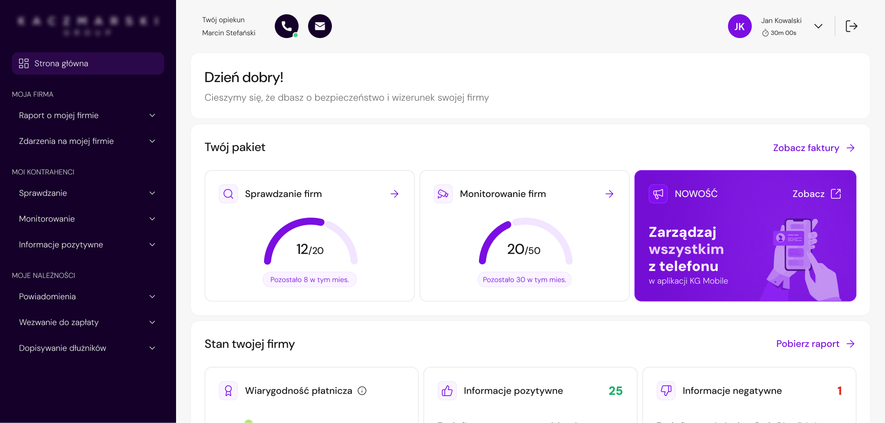
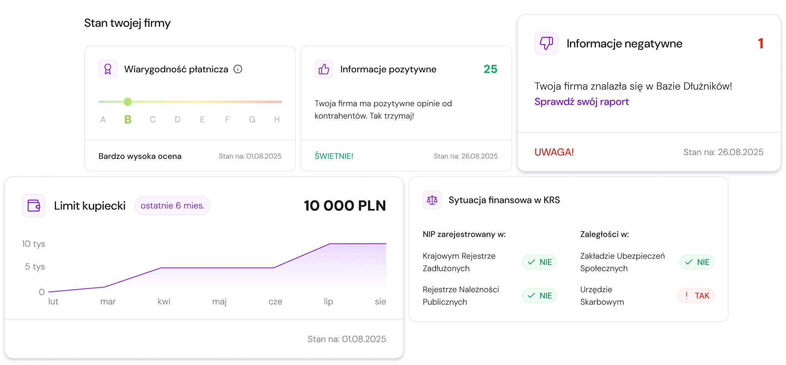
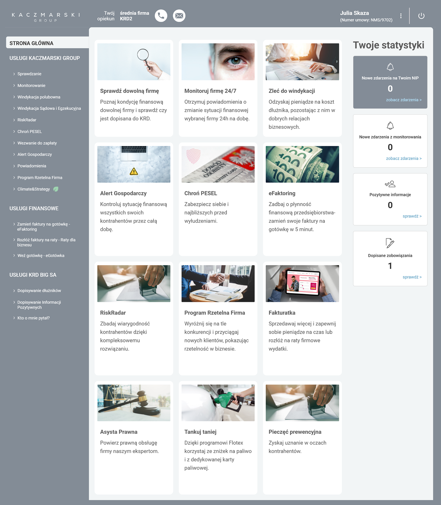
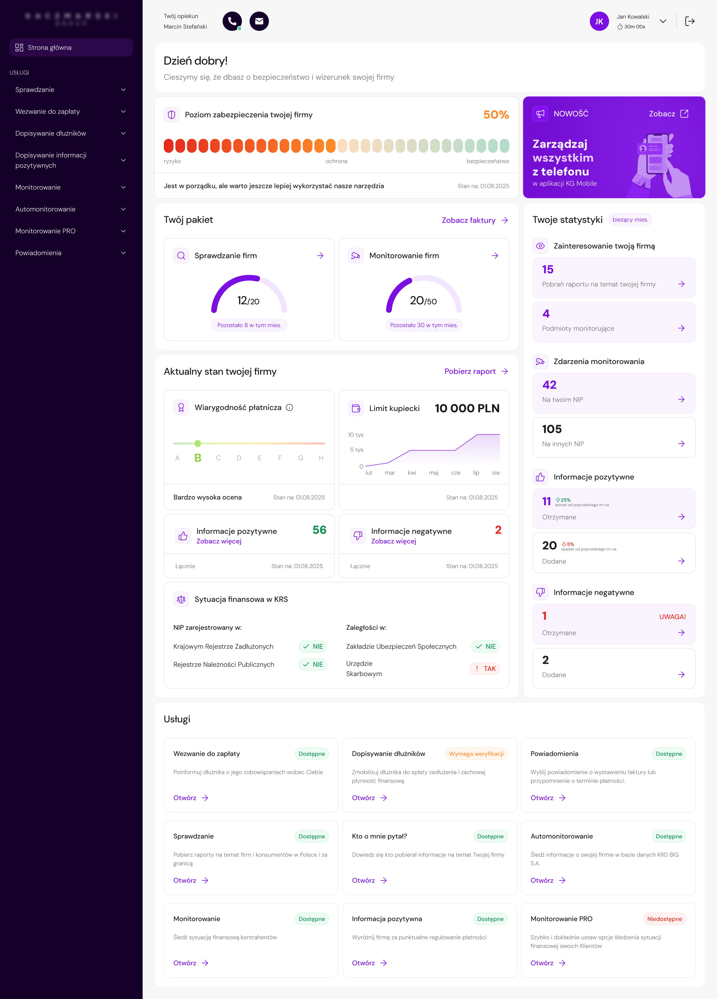
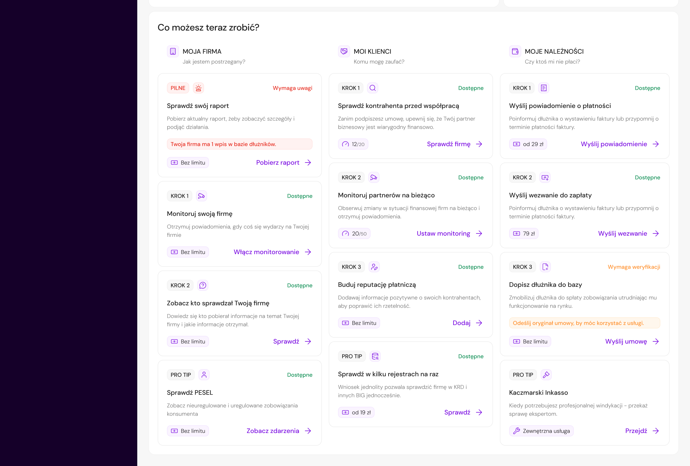
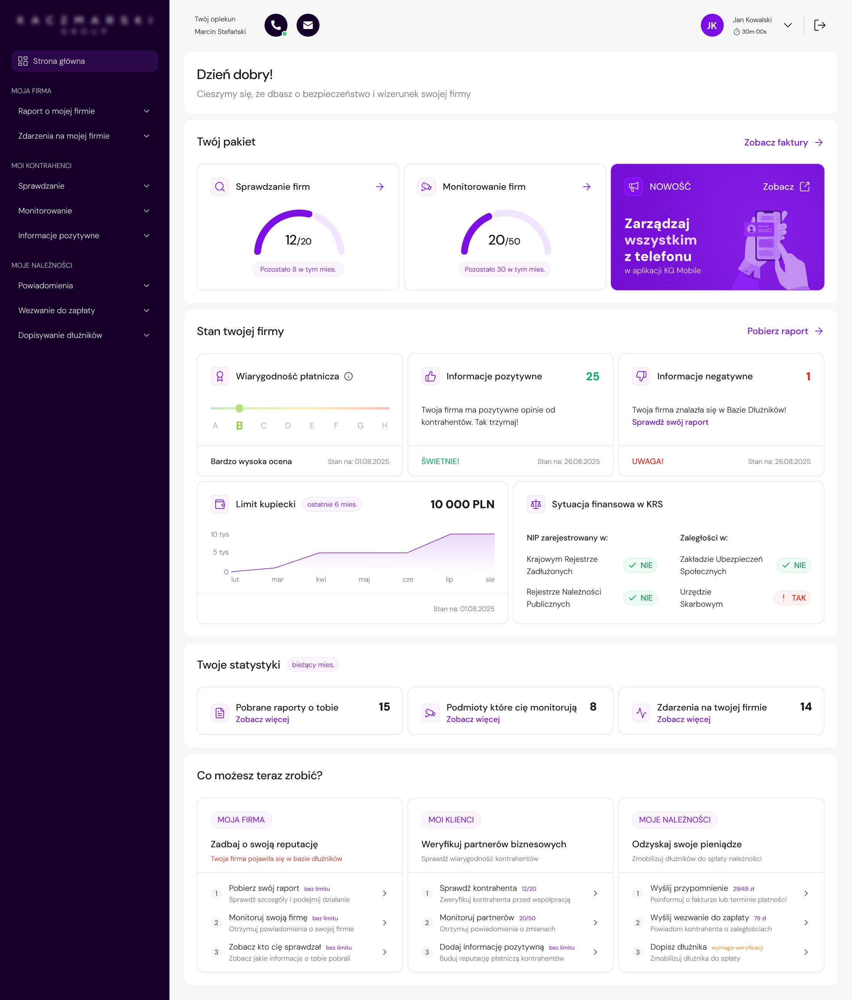
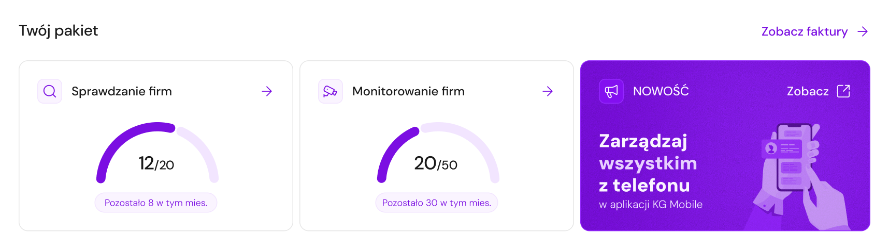
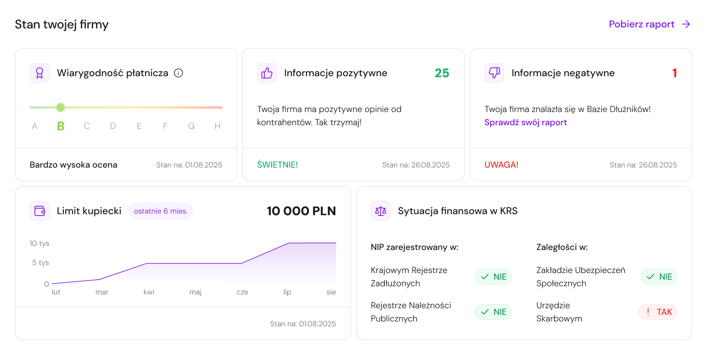
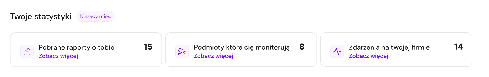
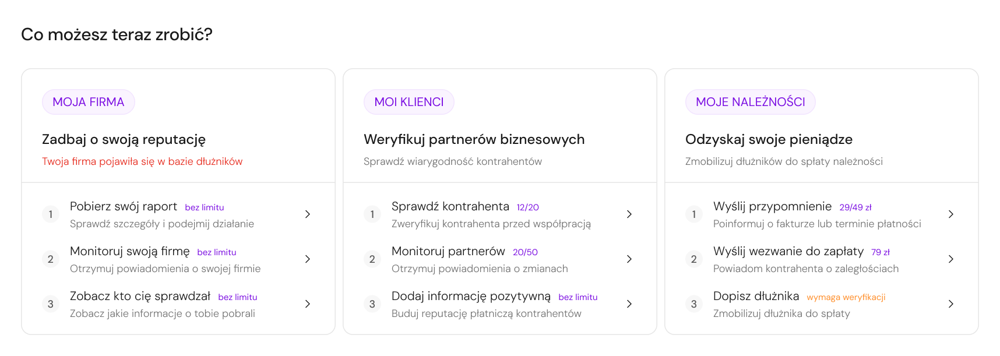

Redesign of the customer panel home page
Transforming a passive service catalog into a dashboard supporting risk monitoring, data analysis, and operational decision-making.

Overview
A web application for a business information bureau, used by entrepreneurs to verify contractors, monitor company health, and manage receivables.
Redesign of the homepage - the first screen after login - from a static grid of service tiles into a decision-support dashboard.

Challenge
The previous homepage functioned as a product catalog - a grid of tiles leading to services also available in the side menu. It duplicated navigation without adding informational value.
The problem was not only related to the UI. The homepage did not answer the questions users had when logging in: What is the current status of my company? How many services do I still have available? Have any new events appeared? What should I do next?
The biggest challenge was not the lack of data or functionality, but prioritization - what the user should see first in order to understand the situation and make a decision.
Main page - Before

Duplicated entry points
All tiles led to the same services already available in the side menu.
No clear next step
No guidance on what action made sense given the user's current situation.
No information priority
All tiles had equal visual weight - no way to identify what mattered most.
How can we transform the homepage from a service catalog into a dashboard that gives users a quick overview of their company's situation and guides them toward the right action?
Goals & UX Requirements
The dashboard needed to address problems visible from both the users' and the business perspective: low homepage usability, recurring support questions, and underuse of services available in the panel.
Discovery
Without reliable homepage analytics available at this stage, customer support became the strongest source of user insight. Their recurring conversations with users revealed repeated friction around package limits, reports, service differences, alerts, and unclear next steps. These patterns directly shaped the dashboard structure.
" Where can I check the status of my company? "
Company status visibility" How many checks do I still have in my package? "
Package limit question" I'm not sure which service I should choose. "
Service comprehension gap" What action should I take? "
Next step uncertaintyUsers didn't know where to check company status
There was no summary view - users had to open a full report to understand their company's basic situation.
Show key report data directly on the dashboardFrequent questions about service limits and package scope
Users regularly contacted support to check how many checks or monitoring services they still had available.
Place package information high in the hierarchyUsers didn't understand differences between services
Service names didn't communicate when to use them - users couldn't map product names to their actual goals.
Group actions by goal, not by service nameToo many equally weighted tiles - ignored
When everything looks the same, nothing stands out. Users learned to ignore the homepage entirely.
Reduce elements and strengthen hierarchyKey insight
Users didn't need more features. They needed context and guidance.
The problem wasn't a lack of functionality - it was the lack of a clear structure explaining what users had available, what required attention, and what action made sense next.
User Archetypes
Based on personas and support insights I identified two primary behavioral patterns - not full demographic profiles, but usage modes that defined what the dashboard must prioritize.
Task-oriented business owner
Marek Kowalski
Entrepreneur
Owner of a mid-sized construction company who wants to quickly check company or contractor status and move on to action.
Needs
- Access key actions quickly
- Understand services easily
- Know what to do next
- Stay in control without reading full reports
Dashboard implication
Easy to scan quickly, guides toward specific actions
Operational finance user
Aleksandra Kamińska
Finance Operations Manager
Employee of a large technology company who regularly monitors company condition, alerts, reports, and data changes.
Needs
- See company status quickly
- Track alerts and changes
- Access reports easily
- Stay confident nothing important is missed
Dashboard implication
Operational overview of the situation - not a list of services
Dashboard Logic
The key shift was moving from "let's show users the available products" toward "let's answer the questions users have when they log in." Users had access to many services, but lacked context: when, why, and in what order to use them.
" How many services can I still use? "
" Is my company in a good situation? "
" What is happening around my company? "
" What can I do now? "
Design decision
The dashboard was designed as a sequence of answers to user needs, not as an exposition of all available services.
Iterations
The dashboard went through several versions, reviewed with the PM and customer support team at each stage. Their feedback helped validate which information was useful, which elements created confusion, and where the interface was still too heavy. The biggest change was not about adding more elements - it was about removing data that didn't support user decisions.
The first version was strongly based on business requirements. It included a dominant "Security level of your company" bar, an extensive statistics section, and a refreshed product catalog.

Dominant "Security level" bar
Refreshed product catalog
Extensive statistics
The UI was more structured than in the old version, and the dashboard started using more data available in the system.
The view still tried to show too much at once and largely preserved the product exposure logic.
In the second version, the "What can you do now?" section appeared, which started replacing the product catalog with recommended actions.

Section "What can you do now?" instead of product catalog
The dashboard started guiding the user more effectively from information to action.
The overall view was still too information-heavy, and business-oriented elements competed with data that was important to the user.
The final version was based on stronger prioritization: fewer competing elements, a simpler statistics section, and a clearer focus on company status and the user's next step.

Clearer focus on company status
Only key next steps kept
Simpler statistics
The dashboard became easier to scan and more focused on users' real decisions.
Reducing Complexity
The most important change across iterations was not adding new components — it was consistently removing elements that increased cognitive load, duplicated information, or had no clear decision-making value.
Removed: "Security level of your company" bar
WhyScore calculation wasn't transparent and was partly based on purchasing extra services. Could reduce trust, create unnecessary stress, and increase support questions.
Removed: statistics that duplicated content or covered unlimited services
WhyThey didn't help users decide what to do next. Kept only indicators with clear value: downloaded reports, entities monitoring the company, and company-related events.
Removed: product catalog as the main navigation method
WhyIt duplicated the side menu and didn't explain when a specific function was worth using. Users needed contextual action paths, not another list of products.
Removed: less critical and external action options
WhyToo many options in "What can you do now?" section weakened hierarchy and could recreate the old problem - many possibilities, but no clear priority for the user.
Final UI
Number of remaining checks and monitoring services shown immediately after login.

Package limits were one of the most common reasons for contacting support. Showing them on the dashboard reduces uncertainty and enables faster action.
Key data from the company report - credibility, credit limit, situation in registers - without opening a full report.

Complex data is presented through short messages, statuses, and colors - users get interpretation before detail.
Only three statistics with clear decision-making value: downloaded reports, entities monitoring the company, and company-related events.

Removing statistics that duplicated data or referred to unlimited services strengthened the overall hierarchy without reducing useful information.
The product passage replaced by "What can you do now?" - recommended actions grouped by goal: taking care of your company, checking a contractor, or recovering receivables.

Users didn't always know which service to use. Goal-based language - not service names - makes the path from intent to action clear.
UI Direction
The dashboard was also an opportunity to start organizing the UI layer of a legacy product. In a system built around complex financial data, consistent typography, spacing, and components reduce cognitive load and help users scan faster.
Unified text styles and usage rules for headings, body text, labels, and helper descriptions - replacing the mix of fonts used across the panel.
Defined rules between sections, cards, and elements inside components to make the dashboard easier to scan visually.
New primary color meeting WCAG contrast requirements - the existing one failed for interactive elements throughout the panel.
Increased space between modules and inside cards - improving data readability and making the dense financial content easier to parse quickly.
Defined styles for buttons, links, and status labels so users can distinguish information from actions faster - especially important in a context where users often receive alert-type data and need to understand what requires action vs. what is just informational.
Reflection & Learnings
Since usability testing and reliable homepage analytics were not available at this stage, customer support became the strongest available source of user insight. It helped identify recurring problems around package limits, reports, service discoverability, company status, and unclear next steps.
Structuring the dashboard around questions users had after logging in helped guide iteration decisions. For each element, I could ask: does this answer a real user need, or does it only add more information?
If the project had moved further, I would validate the final dashboard structure with short task-based sessions - especially around finding package limits, understanding company status, and choosing the next action.
I would also define measurable success criteria earlier, such as fewer support questions, higher usage of key services, and faster access to company status information. This would help connect design decisions to business outcomes from the start.